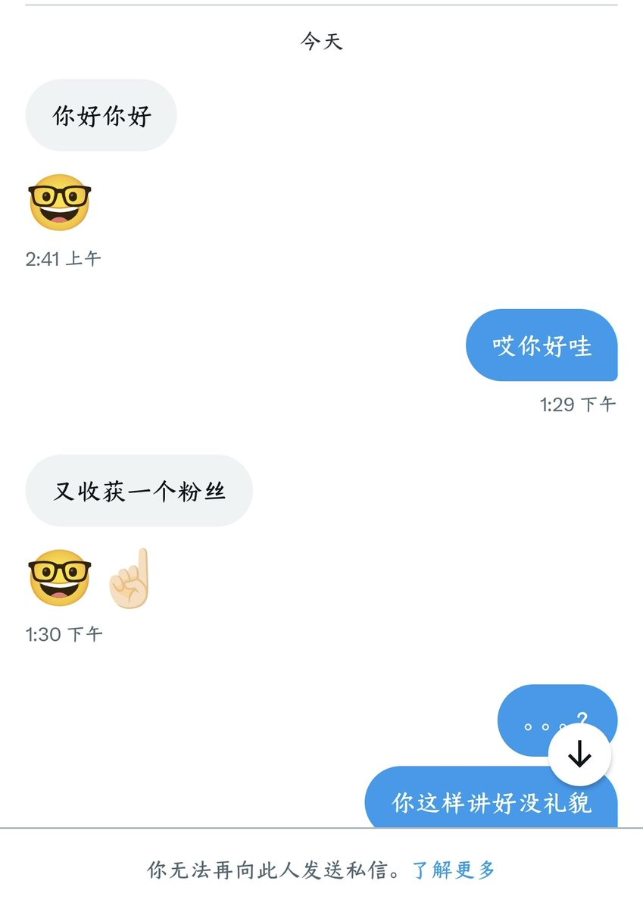
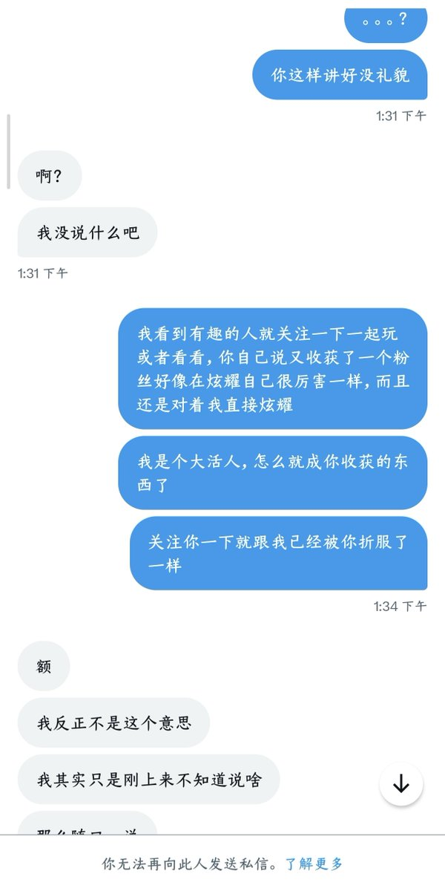
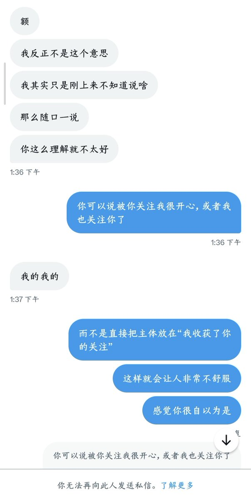
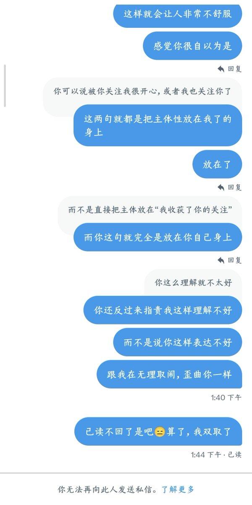

小橘春定（求愛性孤独）
@tatibana_sada
@OceanTides_Moon b事是不是有点多。ego跟气球一样一戳就爆




月光、海洋和潮汐
@OceanTides_Moon
年下男真的很蠢。。。这种男大，完全不会说话，没有经过任何社会上的捶打和历练，无法无天自以为是，情商很低，我已经非常清晰的罗列出了我的诉求，还是看不懂，也完全没有反思，最后还把我拉黑了，我真的厌蠢症要犯了。。。😑😑😑聪明的能听懂人话会说人话的男的真的非常稀少，大部分男的根本无法沟通 https://t.co/5ibbGtss6R https://t.co/VSf1RwIV8V